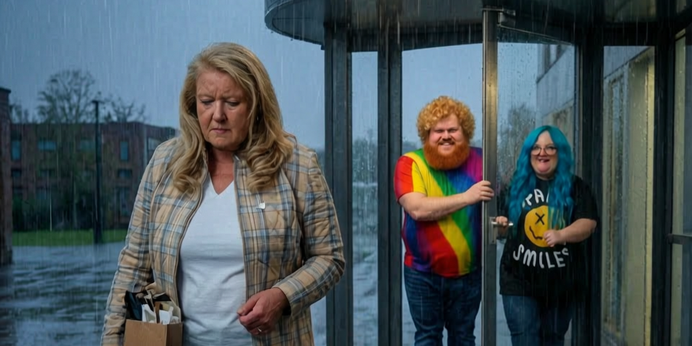

Gekündigt für die falsche Partei

15 Jahre arbeitete Martina Müller als Verwaltungskraft im Friedel-Orth-Hospiz in Jever. Dann kandidierte sie für die AfD. Ihr Arbeitgeber, die mission:lebenshaus, forderte ihren Rückzug. Als sie nicht nachgab, wurde sie fristlos gekündigt.
In der öffentlichen Begründung nennt der Träger keinen Vorfall mit Patienten oder Kollegen und keine schlechte Arbeitsleistung. Er nennt Müllers Kandidatur: Sie widerspreche den Werten von Kirche und Diakonie.
Das ist politische Ausgrenzung mit existenziellen Folgen. Eine zulässige Kandidatur wird zum Kündigungsgrund, weil dem Arbeitgeber die Partei nicht passt. Aus politischem Widerspruch wird berufliche Bestrafung.
Man stelle sich den umgekehrten Fall vor: Ein kirchlicher Träger entlässt eine langjährige Mitarbeiterin, weil sie für die Linke kandidiert. Die Empörung wäre gewaltig – und sie wäre berechtigt.
Der Maßstab ändert sich nicht, weil hier die AfD betroffen ist. Demokratie bedeutet gerade, dass Bürger ihre politischen Rechte auch dann behalten, wenn ihre Ansichten dem Arbeitgeber missfallen.
Kirchen besitzen zwar ein verfassungsrechtlich geschütztes Selbstbestimmungsrecht. Doch selbst dieses schafft keinen automatischen Kündigungsgrund. Das Bundesarbeitsgericht verlangt eine Abwägung im konkreten Fall. Ob diese Kündigung wirksam ist, entscheidet das Arbeitsgericht.
Hinzu kommt ein auffälliger Zeitpunkt: Nach einem Medienbericht sollte Müller ihre Kandidatur bis zum 7. August zurückziehen. Die gesetzliche Rücknahmefrist war bereits am 20. Juli abgelaufen.
Politisch ist die Botschaft trotzdem schon da: Wer für die „falsche“ Partei kandidiert, riskiert nicht nur Widerspruch. Er riskiert seine wirtschaftliche Existenz.